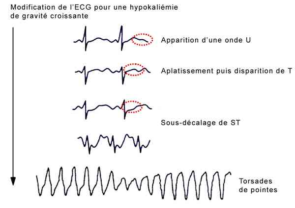

Bienvenue Sur Medical Education
Hypokaliémie
Spécialité : metabolisme /
Points importants
-
Définition : kaliémie < 3,5 mmol/L ; gravité si kaliémie < 2,5 mmol/L
-
Trouble métabolique le plus fréquent aux urgences
-
Pronostic essentiellement cardiaque
-
Urgence vitale
-
La démarche diagnostique comprend l'évaluation de la fonction rénale, de l'état acido-basique ainsi que la recherche de facteurs déclenchants
-
Traitement adéquat urgent, dépendant du retentissement cardiaque et guidé par son mécanisme physiopathologique d'installation
-
Mécanismes :
-
déperditions rénales ou digestives
-
ou par transfert transmembranaire
Présentation clinique / CIMU
SIGNES FONCTIONNELS
- déperditions rénales ou digestives
-
ou par transfert transmembranaire
Présentation clinique / CIMU
SIGNES FONCTIONNELS
Généraux
- Le patient peut-être asymptomatique
- Les signes révélateurs sont souvent frustres et aspécifiques (malaise, syndrome occlusif, troubles du rythme)
Spécifiques : tardifs et inconstants
- Constipation, nausées, vomissements (Iléus paralytique), crampes abdominales (dilatation gastrique)
- Rétention aiguë d'urine (paralysie des muscles lisses)
- Rhabdomyolyse, paralysie musculaire ascendante, crampes (atteinte des muscles squelettiques)
- Signes cardio-vasculaires : palpitations
- Hallucinations
-
Signes d'étiologie :
- polyurie, polydipsie
- vomissements, diarrhées
- sudation, brûlures
CONTEXTE
Antécédents
- Personnels : HTA, maladies endocriniennes (syndromes de Conn, de Cushing)
- Familiaux (paralysie périodique hypokaliémiante)
Traitement au long cours et récent
- Diurétiques thiazidiques ou de l'anse, béta 2 agonistes, théophylline, vérapamil, insuline, chloroquine, pénicilline, glucocorticoides, foscarnet, cisplatine, amphotéricine B, laxatifs, lithium
Facteurs de risque
- Prise d'entésite, pastis, réglisse
- Pertes digestives
EXAMEN CLINIQUE
- HoTA, arythmie
- Fasciculations, tétanie, diminution de la force musculaire
- Diminution des ROT
- Signes de rétention hydrosodée (oedèmes des membres inférieurs, ascite - 3e secteur)
SIGNES PARACLINIQUES SIMPLES
ECG
-
Chez le sujet sain :
- apparition d'une onde U
- aplatissement puis disparition onde T
- sous-décalage segment ST
-  _627 ECG : hypokaliémie
-
Anomalies électriques possibles sur coeur pathologique :
- troubles du rythme supra-ventriculaires : extrasystoles auriculaires, fibrillation auriculaire
- troubles de rythme ventriculaire : extrasystoles polymorphes, multifocaux, TV, FV
- torsade de pointe
CIMU
- Tri 2 : situation non menaçante
- Tri 4 ou 5 : situation menaçante : kaliémie < 2,5 mmol/L ou signes électriques
Signes paracliniques
-
Ionogramme sanguin - urée - créatinine
-
Glycémie
-
NFS (hématocrite) associé aux protides plasmatiques (estimation secteur extracellulaire)
-
A discuter en fonction du contexte : magnésémie (à visée étiologique), calcémie (signe de gravité surajouté)
-
Ionogramme urinaire (natriurèse)
-
Gaz du sang artériels (recherche alcalose)
Diagnostic étiologique
Diagnostic étiologique
Kaliurèse > 20 mmol/24h = pertes rénales
-
Néphropathies :
- syndrome de Gitelman (rare, anomalie héréditaire du transport du sodium, du chlore et du potassium), syndrome Bartter (rare, anomalie héréditaire responsable de syndrome dysmorphique anténatal, alcalose hypokaliémique et néphrocalcinose)
- acidose tubulaire distale
- néphropathies interstitielles avec pertes de sel
- polyurie : après levée d'obstacle, nécrose tubulaire
-
Médicamenteuses :
- diurétiques de l'anse (furosémide Lasilix®, bumétamide Burinex®), thiazidiques
- tubulotoxiques : lithium, cisplatine, amphotéricine B, fosfomycine, pénicilline à fortes doses
- corticothérapie
- autres : acétazolamide Diamox®
-
Endocrinopathies :
- hyperaldostéronisme primaire : hyperplasie bilatérale surrénalienne, adénome surrénalien
- hyperaldostéronisme secondaire avec HTA : HTA réno-vasculaire, HTA maligne, réninome, HTA sous contraceptif oral
- hyperaldostéronisme secondaire sans HTA : syndrome néphrotique, insuffisance cardiaque congestive, cirrhose
- hypercortisolisme (maladie de Cushing)
-
Causes rares :
- consommation glycyrrhizine (réglisse, pastis sans alcool)
- blocs enzymatiques (11 béta ou 17 alpha-hydroxylase) chez enfant
Kaliurèse appropriée < 20 mmol/24h
-
Pertes digestives de K+ :
- diarrhée aiguë / chronique
- vomissements, aspirations gastriques
- laxatifs
- tumeurs villeuses
- VIPome
- syndrome de Zollinger- Ellison
- anastomose jéjuno-iléale
- malabsorption
-
Pertes cutanée de K+ :
- sudation extrême
- brûlures étendues
Autres causes (rares)
-
Carence alimentaire :
- anorexie mentale
- régime amaigrissement
- hypomagnésémie
- dénutrition
-
Transfert intracellulaire de K+ :
- alcalose métabolique ou respiratoire
- insulinothérapie
-
Stimulation catécholamines :
- endogènes (infarctus du myocarde, traumatisme crânien, phéochromocytome)
- exogènes : bêta 2 stimulants (salbutamol, adrénaline)
- Intoxications : chloroquine, théophylline
- Paralysie périodique familiale hypokaliémique (maladie de Westphall)
-
Hypothermie
Diagnostic différentiel
-
Hypocalcémie
-
Hypomagnésémie
-
Syndrome de Cushing
Traitement
-
Urgence thérapeutique, en cas :
-
de symptômes
-
de modifications électriques
-
de cardiopathie sous-jacente
-
de traitement par digitalique associé
-
de en cas d'hypercalcémie
Traitement
-
Urgence thérapeutique, en cas :
- de symptômes
- de modifications électriques
- de cardiopathie sous-jacente
- de traitement par digitalique associé
- de en cas d'hypercalcémie
Arrêt des traitements hypokaliémiants et des digitaliques éventuels
HYPOKALIEMIE MODEREE 3 - 3,4 MMOL/L
- Supplémentation alimentaire
-
Apports per os :
-
gluconate de K+ sirop 1 g équivaut à 4,4 mmoL K+
- 1 cuillère à soupe 2,25g = 10 mmoL
- 1 cuillère à café 0,75 g = 3,3 mmoL
- doses prévisibles = 5 cuillères à soupe/j
- chlorure de K+ 1 g = 13,4 mEq de K+
-
Kaleorid® chlorure de potassium :
- doses prévisibles : 4 g chlorure de K+ = 4 gélules/j
-
Diffu K® chlorure de potassium 600 mg :
- doses prévisibles : 4 g chlorure de K+ = 8 à 10 gélules/j
-
gluconate de K+ sirop 1 g équivaut à 4,4 mmoL K+
HYPOKALIEMIE MOYENNE (2,5 - 3 MMOL/L) SANS SIGNE ELECTRIQUE
Réanimateur médical informé
- Voie veineuse périphérique de gros calibre avec NaCl 0,9% en garde veine - possibilité de pose Bionolyte® B26 (G5% + 4 g NaCl + 2 g KCl)
- Apports IV KCl 2 à 4 g IVSE - débit maximum = 1 g /h
HYPOKALIEMIE SEVERE (< 2,5 MMOL/L) OU AVEC SIGNES ELECTRIQUES
Réanimateur médical informé
- Voie veineuse périphérique de gros calibre (discuter voie veineuse centrale) avec NaCl 0,9 % en garde veine - possibilité de pose Bionolyte® B26 pour apports de KCl : débit à adapter
- KCl 4g IVSE - débit maximum = 1 g /h
-
Sel de Magnésium, MgCl ou MgSO4 2 à 3g dans 100mL de NaCl 0,9 % en 30 min en IV :
- 20 mL de MgCl à 10% (conditionnement : 1 g/10 mL)
- ou 20 mL MgSO4 à 15% (1,5 g/10 mL)
- puis entretien : 3 à 6 g en 24h
En cas de torsade de pointe
- En plus de l'indispensable recharge potassique
- Entraînement électro-systolique externe ou isoprénaline si bradycardie ou QT long
- MgSO4 (même quand la magnésémie est normale) : 1,5 g IVL sur 2 min
EN PARALLELE, TRAITEMENT DES FACTEURS DECLENCHANTS
- En cas de pertes digestives, compensation des pertes (précise : ex. compensation volume à volume avec du NaCl 0,9%)
-
En cas d'acidocétose diabétique, supplémentation potassique après la mise en place de l'insulinothérapie
Surveillance
HYPOKALIEMIE MODEREE
-
Prévoir ionogramme sanguin de contrôle dans les 24 - 48 heures selon motif de recours du patient
HYPOKALIEMIE MOYENNE A SEVERE
-
PA, FC, SpO2 /h
-
Evolution des signes cliniques
-
ECG - scope en continue
-
Contrôle ionogramme (kaliémie) /h
-
Prévoir secondairement dosage magnésium plasmatique
Devenir / orientation
HYPOKALIEMIE MODEREE
-
Pas d'indication à une hospitalisation
-
Adaptation thérapeutique (arrêt du traitement hypokaliémiant)
-
Supplémentation à discuter selon motif de recours
-
Conseils hygiéno-diététiques (alimentation riche en potassium)
-
Contrôle ionogramme sanguin dans les 48 heures
HYPOKALIEMIE MOYENNE
-
Orientation conditionnée par la réponse au traitement instauré
HYPOKALIEMIE SEVERE
-
Prévoir hospitalisation dans un service de soins continus
Mécanisme / description
APPORTS ENDOGENES DE POTASSIUM
-
Le contenu potassium de l'organisme est de 50 mmol/ Kg de poids
-
Les apports alimentaires en potassium sont de 60 à 100 mmol/24h, le besoin minimal est de 25 mmol/ jour
-
Tous les aliments sauf l'eau et les matières grasses contiennent du potassium en des quantités variables ; certains aliments sont naturellement riches en potassium (fruits séchés, olives, haricots, légumes secs, orange, pamplemousse, persil, avocat, artichaut, champignons, choux, oseille, banane, chocolat)
REPARTITION DU K+ DANS L'ORGANISME
-
98% du K+ de l'organisme est localisé dans le secteur intracellulaire
-
La majeure partie du potassium intracellulaire est échangeable
-
Le compartiment musculaire et les cellules hépatiques sont les principales réserves du stock potassique intracellulaire
PHYSIOPATHOLOGIE
-
Le potassium est le principal cation intracellulaire (150 mmol/L)
-
Le potassium extracellulaire (kaliémie) varie de 3,5 à 4,5 mmol/L
-
Le potassium est un ion essentiel au fonctionnement des cellules contractiles et nerveuses. Le gradient trans-cellulaire de potassium (Ki/Ke) est le principal déterminant du potentiel de repos membranaire
-
Habituellement, l'équilibre potassique est maintenu grâce à la régulation de l'excrétion rénale. La filtration glomérulaire est de 170 L / j et la concentration en potassium de ce filtrat est identique à celle du plasma, soit environ 4 mmol/ L. La quantité de potassium filtré est d'environ 720 mmol / j, soit 10 fois les apports quotidiens. Le siège de la sécrétion se situe au niveau du tubule distal et du canal collecteur
-
65% du potassium filtré est réabsorbé dans le tube contourné proximal, environ 30% dans l'anse de Henlé et 1 à 2% du potassium filtré est présent dans le tube contourné distal. L'excrétion urinaire du potassium est donc en grande partie liée à sa sécrétion tubulaire dans le néphron distal
AUGMENTATION DES PERTES EN K+
Devenir / orientation
HYPOKALIEMIE MODEREE
- Pas d'indication à une hospitalisation
- Adaptation thérapeutique (arrêt du traitement hypokaliémiant)
- Supplémentation à discuter selon motif de recours
- Conseils hygiéno-diététiques (alimentation riche en potassium)
- Contrôle ionogramme sanguin dans les 48 heures
HYPOKALIEMIE MOYENNE
- Orientation conditionnée par la réponse au traitement instauré
HYPOKALIEMIE SEVERE
- Prévoir hospitalisation dans un service de soins continus
Mécanisme / description
APPORTS ENDOGENES DE POTASSIUM
-
Le contenu potassium de l'organisme est de 50 mmol/ Kg de poids
-
Les apports alimentaires en potassium sont de 60 à 100 mmol/24h, le besoin minimal est de 25 mmol/ jour
-
Tous les aliments sauf l'eau et les matières grasses contiennent du potassium en des quantités variables ; certains aliments sont naturellement riches en potassium (fruits séchés, olives, haricots, légumes secs, orange, pamplemousse, persil, avocat, artichaut, champignons, choux, oseille, banane, chocolat)
REPARTITION DU K+ DANS L'ORGANISME
-
98% du K+ de l'organisme est localisé dans le secteur intracellulaire
-
La majeure partie du potassium intracellulaire est échangeable
-
Le compartiment musculaire et les cellules hépatiques sont les principales réserves du stock potassique intracellulaire
PHYSIOPATHOLOGIE
-
Le potassium est le principal cation intracellulaire (150 mmol/L)
-
Le potassium extracellulaire (kaliémie) varie de 3,5 à 4,5 mmol/L
-
Le potassium est un ion essentiel au fonctionnement des cellules contractiles et nerveuses. Le gradient trans-cellulaire de potassium (Ki/Ke) est le principal déterminant du potentiel de repos membranaire
-
Habituellement, l'équilibre potassique est maintenu grâce à la régulation de l'excrétion rénale. La filtration glomérulaire est de 170 L / j et la concentration en potassium de ce filtrat est identique à celle du plasma, soit environ 4 mmol/ L. La quantité de potassium filtré est d'environ 720 mmol / j, soit 10 fois les apports quotidiens. Le siège de la sécrétion se situe au niveau du tubule distal et du canal collecteur
-
65% du potassium filtré est réabsorbé dans le tube contourné proximal, environ 30% dans l'anse de Henlé et 1 à 2% du potassium filtré est présent dans le tube contourné distal. L'excrétion urinaire du potassium est donc en grande partie liée à sa sécrétion tubulaire dans le néphron distal
AUGMENTATION DES PERTES EN K+
Pertes digestives : principales causes d'hypokaliémies
- Vomissements = perte gastrique d'acide chlorhydrique responsable d'alcalose métabolique qui aggrave la perte rénale en ions H+ et favorise son transfert intracellulaire
- Dans certaines diarrhées profuses (tumeurs villeuses, VIPomes), importantes pertes en eau (jusqu'à 6 litres par jour) et de K+
Pertes rénales
- Diurétiques : la diminution de la volémie stimule la sécrétion d'aldostérone et s'accompagne d'une alcalose métabolique hypochlorémique qui stimule la kaliurèse
-
Médicaments kaliurétiques :
- l'administration de pénicillines à fortes doses stimule la kaliurèse par augmentation du débit de fluide dans le tube distal
- l'amphotéricine B augmente la conductance potassique de la membrane apicale
-
Déplétion en magnésium :
- l'ion Mg++ est indispensable au fonctionnement de la Na+/K+ ATPase, son déficit favorise la déplétion intracellulaire et la fuite urinaire en K+ ;
- de plus, l'hypomagnasémie stimule la sécrétion d'aldostérone et de rénine
-
Affections rénales :
- la perte rénale en K+ est une complication rare des acidoses tubulaires distales (acidose tubulaire rénale de type I)
- l'anomalie admise est une diminution primitive de la capacité de sécrétion d'ions H+ dans le canal collecteur attribuée à la diminution du nombre de pompes H+ ATPase insérées dans la membrane luminale des cellulaires intercalaires A
- le tableau est analogue dans les néphropathies tubulo-interstitielles comme les pyélonéphrites ou les uropathies obstructives
-
Excès de minéralocorticoïdes :
- l'adénome de la surrénale et l'hyperplasie bilatérale des surrénales sont les deux principales causes d'hyperaldostéronismes primaires. Ces pathologies associent une HTA, une alcalose métabolique, une fuite rénale potassique et une hypernatrémie. La rénine plasmatique est basse alors que l'aldostéronémie est élevée
- la prise d'acide glycyrrhizique, sous forme de réglisse (extrait de licorice), reproduit les effets de l'aldostérone
- Un hyperaldostéronisme avec hyperréninisme se rencontre dans les sténoses de l'artère rénale, les tumeurs sécrétant de la rénine et dans l'HTA maligne
-
Le syndrome de Cushing associe une HTA, une hypokaliémie modérée et une concentration de rénine plasmatique normale :
- les sécrétions ectopiques d'ACTH (tumeur bronchique, pancréatique) et les tumeurs surrénaliennes sont accompagnées d'un taux élevé de déoxycorticostérone ou de corticostérone
- ces 2 métabolites ont une activité minéralocorticoïdes supérieure au cortisol et sont responsables d'hypokaliémies sévères
TRANSFERT INTRACELLULAIRE DE K+
- Relation inverse entre le pH du milieu extracellulaire et la concentration plasmatique en K+
- La stimulation des récepteurs bêta2-adrénergiques entraîne la captation cellulaire du K+
- La correction d'une acidocétose par l'administration d'insuline favorise l'entrée de K+ dans les cellules musculaires et hépatiques. L'effet de l'insuline est indépendant de son action sur la captation cellulaire en glucose
-
Les patients atteints de maladie périodique hypokaliémique ont des accès de paralysie flasque survenant préférentiellement après un effort prolongé ou un repas riche en hydrates de carbone
Bibliographie
-
Consensus d'actualisation SFAR, 1999, P.Garcia, M.Belhoula, D.Grimaud
-
European Resuscitation Council Guidelines for Resuscitation 2005
-
Brown RS, Kidney Int 1986 30 116 - 127
-
A. Ellrodt, Urgences médicales, Edition ESTEM
-
Lissac J, Amiel C, Grunfeld JP, Interprétation des déséquilibres hydro-électrolytiques et acidobasiques, JB Baillères, Paris 1988
-
S. Silbernagl, A.Despopoulos, Atlas de poche de physiologie, Médecine - Science - Flammarion
-
Dr T. Hannedouche - Traitement de suppléance de l'insuffisance rénale terminale - dialyse - www.nephrohus.org
- mise à jour 26 Août 2008
-
Dr T. Hannedouche - symptomatologie et complications hydro-électrolytiques de l'IRC - www.nephrohus.org - mise à jour 14 Mai 2008
-
S.Gidenne, Suivi bilogique de l'hémodialyse chronique, Annales de Biologie clinique, volume 58, numéro 6, 663- 74 - Novembre - Décembre 2000, Revues générales
-
Carli - Riou
-
ANAES, diagnostic de l'insuffisance rénale chronique de l'adulte, synthèse des recommandations, Septembre 2002
-
Adrogue HJ Changes in plasma potassium concentration during acute acid-base disturbances Am J Med 1981 71 456 - 467
-
William ME catecholamine modulation of rapid potassium shifts during exercices N Eng J Med 1985 312 823 - 827
-
Kim GH, Hans JS Therapeutice approach to hypokalaemia Nephron 2002 92 suppl 1 : 28-32
. Schaefer TJ, Wolford RW Disords of Potassium Emerg Med Clin North Am 2005 23 (3) 723- 47
-
Kraft MD, Btaiche IF, Sacks GS, Kudsk KA treatment of electrolyte disorders in adult patient in the intensive care unit Am J Health Sys Pharm 2005 62 (16) 1663 - 82
-
Hollander - Rodriguez JC, Calvert JF Jr Hyperkalaemia Am Fam Physician 2006 73 (2) 283 - 290
-
Mahoney BA, Smith WA, Lo DS, Tsoi K, Tonelli M, Classe CM Emergency Interventions of hyperkalaemia Cochrane Database Sys Rev 2005 18 (2)
-
Kamel KS, Wei C Controversal Issue in the treatment of hyperkalaemia Nephrol Dial Transplant 2003 18 (11) 2215 - 8
. Schaefer TJ, Wolford RW Disords of Potassium Emerg Med Clin North Am 2005 23 (3) 723- 47
Auteur(s) : Albéric GAYET